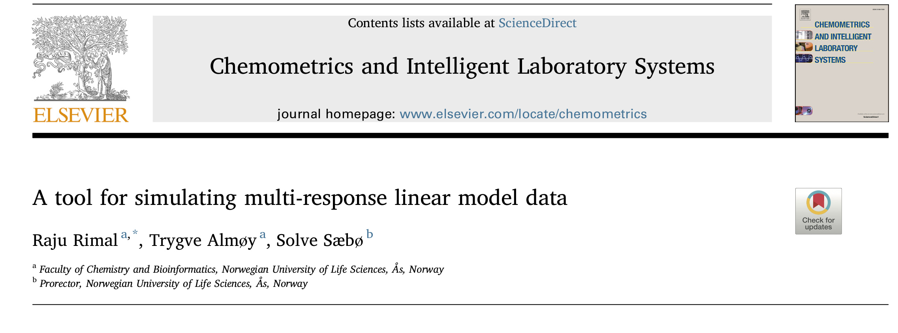
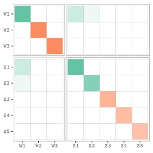

Man is a tool-using animal. Without tools he is nothing, with tools he is all.
Wednesday, 04 July 2018 | https://goo.gl/9xDZqk
Man is a tool-using animal. Without tools he is nothing, with tools he is all.

Man is a tool-using animal. Without tools he is nothing, with tools he is all.

\[ \begin{equation} \begin{bmatrix}y \\ x \end{bmatrix} \sim \mathcal{N}\left( \begin{bmatrix} \mu_y \\ \mu_x \end{bmatrix}, \underset{(m + p)\times(m + p)}{\begin{bmatrix} \Sigma_{yy} & \Sigma_{yx}\\ \Sigma_{xy} & \Sigma_{xx} \end{bmatrix}} \right) \end{equation} \] There are \(\frac{1}{2}(p + m)(p + m + 1)\) unknowns to identify this model.
equivalently,
\[ \begin{equation} \mathbf{y} = \beta_0 + \boldsymbol{\beta}^t\mathbf{x} + \boldsymbol{\varepsilon} \end{equation} \]
also, we can express, \(\boldsymbol{\beta} = \Sigma_{xx}^{-1}\Sigma_{xy}\)
\[\begin{bmatrix}w \\ z \end{bmatrix} \sim \mathcal{N}\left( \begin{bmatrix} \mu_w \\ \mu_z \end{bmatrix}, \underset{(m + p)\times(m + p)}{\begin{bmatrix} \Sigma_{ww} & \Sigma_{wz}\\ \Sigma_{zw} & \Sigma_{zz} \end{bmatrix}} \right)\]
\(\frac{1}{2}(p + m)(p + m + 1)\) unknowns can be reduced and parameterized.


A subspace in predictor space spanned by subset of predictor components is relevant for the response. Also, only a subspace of response space spanned by subset of response components is informative.
Most of the research papers use simulated data. Here are just few mentions:
design <- crossing(
gamma = c(0.1, 1.2),
relpos = c("1:5", "5:9")) %>%
mutate(relpos = map(
relpos, ~eval(parse(text = .x))),
sim_obj = map2(gamma, relpos,
~simrel(
n = 500,
p = 10, m = 3,
q = 10,
relpos = list(.y),
ypos = list(1:3),
gamma = .x,
eta = 0, R2 = 0.8,
type = "multivariate"
)
))
# A tibble: 4 x 3 gamma relpos sim_obj <dbl> <chr> <list> 1 0.1 1:5 <S3: simrel> 2 0.1 5:9 <S3: simrel> 3 1.2 1:5 <S3: simrel> 4 1.2 5:9 <S3: simrel>
if (!require(devtools)) install.packages("devtools")
devtools::install_github("simulatr/simrel")
if (!require(simrel)) install.packages("simrel")
shiny::runGitHub("simulatr/AppSimulatr")

NMBU

BioStatistics, NMBU
For the opportunity
1. Gangsei LE, Almøy T, Sæbø S. Theoretical evaluation of prediction error in linear regression with a bivariate response variable containing missing data. Communications in Statistics - Theory and Methods. 2016;0(0):1-9. doi:10.1080/03610926.2016.1222434.
2. Cook RD, Forzani L, Su Z. A note on fast envelope estimation. Journal of Multivariate Analysis. 2016;150:42-54.
3. Helland IS, Saebø S, Tjelmeland H, others. Near optimal prediction from relevant components. Scandinavian Journal of Statistics. 2012;39(4):695-713.
4. Almøy T. A simulation study on comparison of prediction methods when only a few components are relevant. Computational Statistics & Data Analysis. 1996;21(1):87-107. doi:10.1016/0167-9473(95)00006-2.
5. Rimal R, Almøy T, ø SS. A tool for simulating multi-response linear model data. Chemometrics and Intelligent Laboratory Systems. 2018;176:1-10. doi:10.1016/j.chemolab.2018.02.009.
6. Sæbø S, Almøy T, Helland IS. Simrel – a versatile tool for linear model data simulation based on the concept of a relevant subspace and relevant predictors. Chemometrics and Intelligent Laboratory Systems. 2015.
7. Helland IS, Sæbø S, Almøy T, Rimal R. Model and estimators for partial least squares regression. Journal of Chemometrics.:e3044. doi:10.1002/cem.3044.